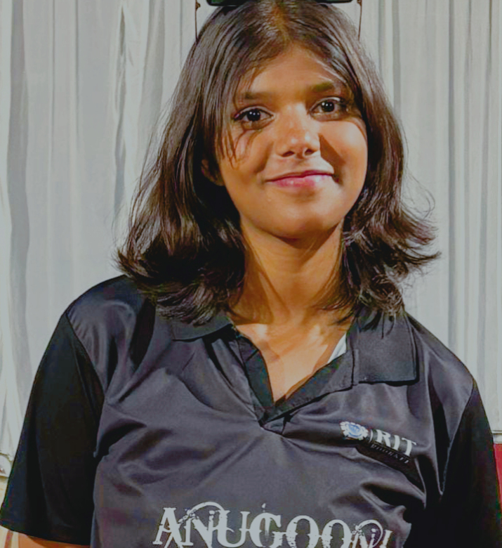

Navendu Kantha
Verified Graduate
I received a job offer mid-course, and the subjects I learned were current, if not more so,
in the company I joined. I honestly feel I got every penny’s worth.
"After many years as an EMT, I was looking to transition into a new career and heard outstanding feedback about Publiq. I joined the company and found the experience to be both challenging and incredibly rewarding. The first 12 weeks were particularly intense but provided a strong foundation for my new career path. Since then, I’ve successfully made the transition and am excited about the professional growth and opportunities at Publiq."
Siddharth Sandilya
Under Graduate
The team was very supportive and kept me motivated
“ I started as a total newbie with virtually no coding skills. I now work as a mobile engineer
for a big company. This was one of the best investments I’ve made in myself. ”

Nivedita Tripathi
Under Graduate
An overall wonderful and rewarding experience
“ I am truly grateful for this opportunity, as I now have an internship that I thoroughly enjoy. Not only am I able to make a meaningful contribution, but I also find fulfillment in doing something I am passionate about. "
Misty Priya
Under Graduate
Actively seeking a web development internship to apply my skills in HTML, CSS, and JavaScript. Eager to contribute and grow within a dynamic team!
"Recent web development enthusiast eager to kickstart my career with an internship opportunity. Skilled in HTML, CSS, and JavaScript, and ready to apply my learning in a real-world environment. Looking forward to working with a creative team and growing professionally. Open to learning and contributing from day one!"
Naitik Raj
Under Graduate
Such a life-changing experience. Highly recommended!
"Before joining the Geekster, I had no experience in coding and needed a structured approach to learn programming. Encouraged by a former student’s glowing recommendation, I decided to enroll. The program’s curriculum was thorough and well-structured, providing step-by-step instruction with exceptional support from the staff. The agile team project was a standout feature, offering practical, real-world experience that went beyond traditional tutorials. This project not only enhanced my learning but also became a key example in interviews. It significantly contributed to my ability to secure multiple job offers. Ultimately, I landed a role as a full-stack developer, thanks to the skills and experience gained from this bootcamp. I highly recommend this program for anyone looking to build a strong foundation in tech."